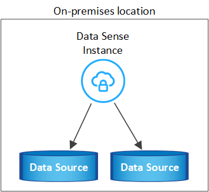
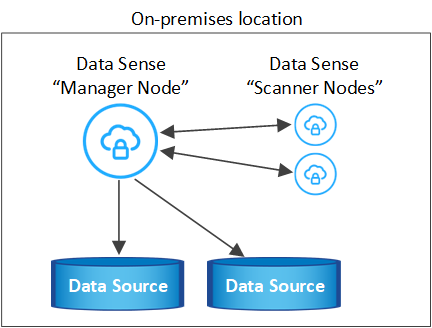
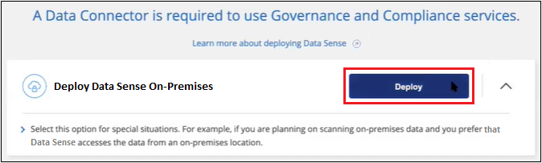

Demander de modifier un document
Demander de modifier un document Modifier sur GitHub
Modifier sur GitHub Guide des contributeurs
Guide des contributeursDéploiement des données cloud sur site sans accès Internet
Contributeurs
Suivez quelques étapes pour déployer Cloud Data Sense sur un hôte dans un site sur site qui ne dispose pas d’un accès Internet. Ce type d’installation est parfait pour vos sites sécurisés.
Notez que vous pouvez également "Déployer Data Sense dans un site sur site qui dispose d’un accès Internet".
Sources de données prises en charge
Lorsqu’il est installé de cette manière (parfois appelé site « hors ligne » ou « distant »), Data Sense peut uniquement analyser les données à partir de sources également locales sur site. A ce moment, Data Sense peut analyser les sources de données locales suivantes :
-
Systèmes ONTAP sur site
-
Schémas de base de données
-
Comptes SharePoint sur site (SharePoint Server)
-
Partages de fichiers CIFS ou NFS non NetApp
-
Stockage objet qui utilise le protocole simple Storage Service (S3)
Dans les cas particuliers où vous avez besoin d’une installation BlueXP très sécurisée, mais que vous souhaitez également numériser des données locales à partir de comptes OneDrive ou de comptes SharePoint Online, vous pouvez utiliser le programme d’installation hors ligne Data Sense et fournir un accès Internet à quelques points de terminaison sélectionnés. Voir and OneDrive special requirements,Exigences spéciales relatives à SharePoint et OneDrive pour plus d’informations.
L’analyse des comptes Cloud Volumes ONTAP, Azure NetApp Files, FSX pour ONTAP, AWS S3 ou Google Drive n’est pas prise en charge lorsque Data SENSE est déployé sur un site sombre.
Limites
La plupart des fonctions de détection de données fonctionnent lorsqu’elles sont déployées sur un site sans accès à Internet. Toutefois, certaines fonctionnalités nécessitant un accès à Internet ne sont pas prises en charge, par exemple :
-
Gestion des étiquettes Microsoft Azure information protection (AIP)
-
Envoi d’alertes par e-mail aux utilisateurs BlueXP lorsque certaines stratégies critiques renvoient des résultats
-
Définition des rôles BlueXP pour différents utilisateurs (par exemple, Account Admin ou Compliance Viewer)
-
Copie et synchronisation des fichiers source à l’aide de Cloud Sync
-
Réception des commentaires de l’utilisateur
-
Mises à niveau logicielles automatisées depuis BlueXP
Le connecteur BlueXP et Data Sense nécessitent tous deux des mises à niveau manuelles régulières pour activer de nouvelles fonctionnalités. Vous pouvez voir la version de détection de données au bas des pages de l’interface utilisateur de détection de données. Vérifier le "Notes de version de Cloud Data Sense" pour voir les nouvelles fonctionnalités dans chaque version et si vous voulez ou non ces fonctionnalités. Vous pouvez ensuite suivre les étapes à Data Sense software,Mettez à niveau votre logiciel Data Sense.
Démarrage rapide
Pour commencer rapidement, suivez ces étapes ou faites défiler jusqu’aux sections restantes pour obtenir de plus amples informations.
Si aucun connecteur n’est déjà installé sur votre site hors ligne sur site, "Déployer le connecteur" Sur un hôte Linux.
Assurez-vous que votre système Linux est conforme au the Linux host system,configuration requise pour l’hôte, que tous les logiciels requis sont installés, et que votre environnement hors ligne répond aux exigences BlueXP and Data Sense prerequisites,autorisations et connectivité.
Téléchargez le logiciel Cloud Data SENSE sur le site de support NetApp et copiez le fichier d’installation sur l’hôte Linux que vous prévoyez d’utiliser. Lancez ensuite l’assistant d’installation et suivez les invites pour déployer l’instance Cloud Data Sense.
Les 1 premiers To de données scanners Cloud Data SENSE dans BlueXP sont gratuits. Une licence NetApp BYOL est requise pour continuer l’analyse des données après ce point.
Installez le connecteur BlueXP
Si vous n’avez pas encore de connecteur BlueXP installé sur votre site hors ligne, "Déployer le connecteur" Sur un hôte Linux de votre site hors ligne.
Préparez le système hôte Linux
Le logiciel de détection des données doit être exécuté sur un hôte qui répond à des exigences spécifiques du système d’exploitation, de la RAM, des exigences logicielles, etc. Data Sense n’est pas pris en charge sur un hôte partagé avec d’autres applications ; l’hôte doit être un hôte dédié.
-
Système d’exploitation : Red Hat Enterprise Linux ou CentOS versions 8.0 à 8.6
-
La version 7.8 ou 7.9 peut être utilisée, mais la version du noyau Linux doit être 4.0 ou supérieure
-
Le système d’exploitation doit pouvoir installer Docker Engine (par exemple, désactiver le service firewalld si nécessaire)
-
-
Disque : SSD avec 500 Gio disponible sur /, ou
-
100 Gio disponible sur /opt
-
400 Gio disponible sur /var
-
5 Gio sur /tmp
-
-
RAM : 64 Go (la mémoire d’échange doit être désactivée sur l’hôte)
-
Processeur : 16 cœurs
Notez que vous pouvez déployer Data Sense sur un système avec moins de processeurs et moins de RAM, mais il y a des limites lors de l’utilisation de ces systèmes. Voir "Utilisation d’un type d’instance plus petit" pour plus d’informations.
Vous devez installer le logiciel suivant sur l’hôte avant d’installer Data Sense :
-
Docker Engine version 19 ou ultérieure. "Voir les instructions d’installation".
-
Python 3 version 3.6 ou ultérieure. "Voir les instructions d’installation".

|
L’adresse IP du système hôte Data Sense ne peut pas être modifiée après l’installation. |
Vérifier les prérequis BlueXP et Data Sense
Avant de déployer Cloud Data, lisez les conditions préalables suivantes pour vérifier que la configuration est prise en charge.
-
Assurez-vous que BlueXP dispose d’autorisations pour déployer des ressources et créer des groupes de sécurité pour l’instance Cloud Data Sense.
-
Assurez-vous que le connecteur BlueXP peut accéder à l’instance de détection de données. Le groupe de sécurité du connecteur doit autoriser le trafic entrant et sortant via le port 443 vers et depuis l’instance de détection des données.
Cette connexion permet le déploiement de l’instance Data Sense et vous permet d’afficher les informations de conformité et de gouvernance.
Assurez-vous que le port 8080 est ouvert pour voir la progression de l’installation dans BlueXP.
-
Assurez-vous de continuer d’exécuter le contrôle des données cloud. L’instance Cloud Data SENSE doit rester active pour analyser en continu vos données.
-
Assurez la connectivité de votre navigateur Web au cloud Data Sense. Une fois Cloud Data SENSE activé, assurez-vous que les utilisateurs accèdent à l’interface BlueXP à partir d’un hôte connecté à l’instance Data Sense.
L’instance de détection de données utilise une adresse IP privée pour s’assurer que les données indexées ne sont pas accessibles aux autres. Par conséquent, le navigateur Web que vous utilisez pour accéder à BlueXP doit disposer d’une connexion à cette adresse IP privée. Cette connexion peut provenir d’un hôte qui se trouve dans le même réseau que l’instance Data Sense.
Exigences spéciales relatives à SharePoint et OneDrive
Lorsque BlueXP et Data Sense sont déployés sur un site sans accès à Internet, vous pouvez analyser les fichiers dans les comptes SharePoint Online et OneDrive en fournissant un accès Internet à quelques points de terminaison sélectionnés.
Les comptes SharePoint sur site peuvent être numérisés sans fournir d’accès à Internet.
| Terminaux | Objectif |
|---|---|
\login.microsoft.com \graph.microsoft.com |
Communication avec les serveurs Microsoft pour se connecter au service en ligne sélectionné. |
https://cloudmanager.cloud.netapp.com |
Communication avec le service BlueXP, qui inclut les comptes NetApp. |
L’accès à cloudmanager.cloud.netapp.com n’est nécessaire que lors des connexions initiales à ces services externes.
Déployer un sens des données
Pour les configurations standard, le logiciel est installé sur un système hôte unique. "Découvrez ces étapes ici".

Pour les très grandes configurations dans lesquelles vous numérisez des pétaoctets de données, vous pouvez inclure plusieurs hôtes pour bénéficier d’une puissance de traitement supplémentaire. "Découvrez ces étapes ici".

Installation à un seul hôte pour les configurations courantes
Procédez comme suit lors de l’installation du logiciel Data Sense sur un hôte sur site unique dans un environnement hors ligne.
-
Vérifiez que votre système Linux est conforme à la the Linux host system,configuration requise pour l’hôte.
-
Vérifiez que vous avez installé les deux modules de prérequis logiciels (Docker Engine et Python 3).
-
Assurez-vous que vous disposez des privilèges root sur le système Linux.
-
Vérifiez que votre environnement hors ligne répond aux besoins BlueXP and Data Sense prerequisites,autorisations et connectivité.
-
Sur un système configuré sur Internet, téléchargez le logiciel Cloud Data Sense à partir du "Site de support NetApp". Le fichier que vous devez sélectionner est nommé DataSense-Offline-bundle-<version>.tar.gz.
-
Copiez le pack d’installation sur l’hôte Linux que vous envisagez d’utiliser sur le site sombre.
-
Décompressez le programme d’installation sur la machine hôte, par exemple :
tar -xzf DataSense-offline-bundle-v1.16.1.tar.gzCeci extrait le logiciel requis et le fichier d’installation réel DATASENNSE-INSTALLER-V1.16.1.tar.gz.
-
Lancez BlueXP et sélectionnez gouvernance > Classification.
-
Cliquez sur Activer détection de données.

-
Cliquez sur déployer pour démarrer l’assistant de déploiement sur site.

-
Dans la boîte de dialogue Deploy Data Sense on local, copiez la commande fournie et collez-la dans un fichier texte afin que vous puissiez l’utiliser ultérieurement, puis cliquez sur Fermer. Par exemple :
sudo ./install.sh -a 12345 -c 27AG75 -t 2198qq --darksite -
Décompressez le fichier d’installation sur la machine hôte, par exemple :
tar -xzf DATASENSE-INSTALLER-V1.16.1.tar.gz -
Lorsque le programme d’installation vous le demande, vous pouvez entrer les valeurs requises dans une série d’invites, ou vous pouvez fournir les paramètres requis comme arguments de ligne de commande au programme d’installation :
Notez que le programme d’installation effectue une pré-vérification afin de s’assurer que vos exigences système et réseau sont en place pour une installation réussie.
Entrez les paramètres comme demandé : Saisissez la commande complète : -
Coller les informations copiées à partir de l’étape 7 :
sudo ./install.sh -a <account_id> -c <agent_id> -t <token> --darksite -
Entrez l’adresse IP ou le nom d’hôte de la machine hôte Data Sense afin qu’elle soit accessible par l’instance de connecteur.
-
Entrez l’adresse IP ou le nom d’hôte de la machine hôte BlueXP Connector afin qu’elle soit accessible par l’instance Data Sense.
Vous pouvez également créer la commande entière à l’avance, en fournissant les paramètres d’hôte nécessaires :
sudo ./install.sh -a <account_id> -c <agent_id> -t <token> --host <ds_host> --manager-host <cm_host> --no-proxy --darksiteValeurs variables :
-
Account_ID = ID du compte NetApp
-
Agent_ID = ID connecteur
-
token = jeton utilisateur jwt
-
Ds_host = adresse IP ou nom d’hôte du système Data Sense Linux.
-
Cm_host = adresse IP ou nom d’hôte du système de connecteurs BlueXP.
-
Le programme d’installation de Data Sense installe les packages, enregistre l’installation et installe Data Sense. L’installation peut prendre entre 10 et 20 minutes.
S’il y a une connectivité sur le port 8080 entre la machine hôte et l’instance de connecteur, vous verrez la progression de l’installation dans l’onglet détection de données de BlueXP.
Dans la page Configuration, vous pouvez sélectionner local "Clusters ONTAP sur site" et "les bases de données" que vous voulez numériser.
Vous pouvez également "Configurez les licences BYOL pour Cloud Data Sense" À partir de la page du porte-monnaie numérique. Vous ne serez facturé que lorsque la quantité de données dépasse 1 To.
Installation de plusieurs hôtes pour de grandes configurations
Pour les très grandes configurations dans lesquelles vous numérisez des pétaoctets de données, vous pouvez inclure plusieurs hôtes pour bénéficier d’une puissance de traitement supplémentaire. Lors de l’utilisation de plusieurs systèmes hôtes, le système principal est appelé le Manager node et les systèmes supplémentaires qui fournissent une puissance de traitement supplémentaire sont appelés scanner nodes.
Procédez comme suit lors de l’installation du logiciel Data Sense sur plusieurs hôtes sur site dans un environnement hors ligne.
-
Vérifiez que tous vos systèmes Linux pour les nœuds Manager et scanner sont conformes à la the Linux host system,configuration requise pour l’hôte.
-
Vérifiez que vous avez installé les deux modules de prérequis logiciels (Docker Engine et Python 3).
-
Assurez-vous que vous disposez des privilèges root sur les systèmes Linux.
-
Vérifiez que votre environnement hors ligne répond aux besoins BlueXP and Data Sense prerequisites,autorisations et connectivité.
-
Vous devez disposer des adresses IP des hôtes du nœud de scanner que vous prévoyez d’utiliser.
-
Les ports et protocoles suivants doivent être activés sur tous les hôtes :
Port Protocoles Description 2377
TCP
Communications de gestion du cluster
7946
TCP, UDP
Communication inter-nœuds
4789
UDP
Superposition du trafic réseau
50
ESP
Trafic du réseau de superposition IPSec chiffré (ESP)
111
TCP, UDP
Serveur NFS pour le partage de fichiers entre les hôtes (requis de chaque nœud de scanner vers le nœud gestionnaire)
2049
TCP, UDP
Serveur NFS pour le partage de fichiers entre les hôtes (requis de chaque nœud de scanner vers le nœud gestionnaire)
-
Suivez les étapes 1 à 8 du "Installation avec un seul hôte" sur le nœud gestionnaire.
-
Comme indiqué à l’étape 9, lorsque le programme d’installation vous le demande, vous pouvez entrer les valeurs requises dans une série d’invites, ou vous pouvez fournir les paramètres requis comme arguments de ligne de commande au programme d’installation.
En plus des variables disponibles pour une installation à un seul hôte, une nouvelle option -n <node_ip> est utilisée pour spécifier les adresses IP des nœuds du scanner. Plusieurs adresses IP de nœud sont séparées par une virgule.
Par exemple, cette commande ajoute 3 nœuds de scanner :
sudo ./install.sh -a <account_id> -c <agent_id> -t <token> --host <ds_host> --manager-host <cm_host> -n <node_ip1>,<node_ip2>,<node_ip3> --no-proxy --darksite -
Avant la fin de l’installation du nœud Manager, une boîte de dialogue affiche la commande d’installation requise pour les nœuds du scanner. Copiez la commande et enregistrez-la dans un fichier texte. Par exemple :
sudo ./node_install.sh -m 10.11.12.13 -t ABCDEF-1-3u69m1-1s35212 -
Sur chaque hôte de nœud du scanner :
-
Copiez le fichier d’installation de Data Sense (DATASENSE-INSTALLER-<version>.tar.gz) sur l’ordinateur hôte.
-
Décompressez le fichier d’installation.
-
Collez et exécutez la commande que vous avez copiée à l’étape 3.
Une fois l’installation terminée sur tous les nœuds du scanner et qu’ils ont été associés au nœud du gestionnaire, l’installation du nœud du gestionnaire se termine également.
-
Le programme d’installation de Cloud Data Sense termine l’installation des packages et enregistre l’installation. L’installation peut prendre entre 15 et 25 minutes.
Dans la page Configuration, vous pouvez sélectionner local "Clusters ONTAP sur site" et locales "les bases de données" que vous voulez numériser.
Vous pouvez également "Configurez les licences BYOL pour Cloud Data Sense" À partir de la page du porte-monnaie numérique. Vous ne serez facturé que lorsque la quantité de données dépasse 1 To.
Mettre à niveau le logiciel Data Sense
Le logiciel Data Sense étant mis à jour régulièrement avec de nouvelles fonctionnalités, vous devez rechercher régulièrement de nouvelles versions afin de vous assurer que vous utilisez les derniers logiciels et fonctionnalités. Vous devrez mettre à niveau le logiciel Data Sense manuellement car il n’y a pas de connexion Internet pour effectuer la mise à niveau automatiquement.
-
Le logiciel Data Sense peut être mis à niveau une version majeure à la fois. Par exemple, si la version 1.15.x est installée, vous ne pouvez effectuer la mise à niveau que vers la version 1.16.x. Si vous êtes quelques versions principales derrière, vous devrez mettre à niveau le logiciel à plusieurs reprises.
-
Vérifiez que votre logiciel On-site Connector a été mis à niveau vers la dernière version disponible. "Reportez-vous aux étapes de mise à niveau du connecteur".
-
Sur un système configuré sur Internet, téléchargez le logiciel Cloud Data Sense à partir du "Site de support NetApp". Le fichier que vous devez sélectionner est nommé DataSense-Offline-bundle-<version>.tar.gz.
-
Copiez le pack logiciel sur l’hôte Linux où Data Sense est installé sur le site sombre.
-
Décompressez le pack logiciel sur la machine hôte, par exemple :
tar -xvf DataSense-offline-bundle-v1.16.1.tar.gzCeci extrait le fichier d’installation DATASESNSE-INSTALLER-V1.16.1.tar.gz.
-
Décompressez le fichier d’installation sur la machine hôte, par exemple :
tar -xzf DATASENSE-INSTALLER-V1.16.1.tar.gzCeci extrait le script de mise à niveau start_darksite_upgrade.sh et tout logiciel tiers requis.
-
Exécutez le script de mise à niveau sur la machine hôte, par exemple :
start_darksite_upgrade.sh
Le logiciel Data Sense est mis à niveau sur votre hôte. La mise à jour peut prendre entre 5 et 10 minutes.
Notez qu’aucune mise à niveau n’est requise sur les nœuds du scanner si vous avez déployé Data Sense sur plusieurs systèmes hôtes pour analyser des configurations très volumineuses.
Vous pouvez vérifier que le logiciel a été mis à jour en vérifiant la version au bas des pages de l’interface utilisateur de détection de données.